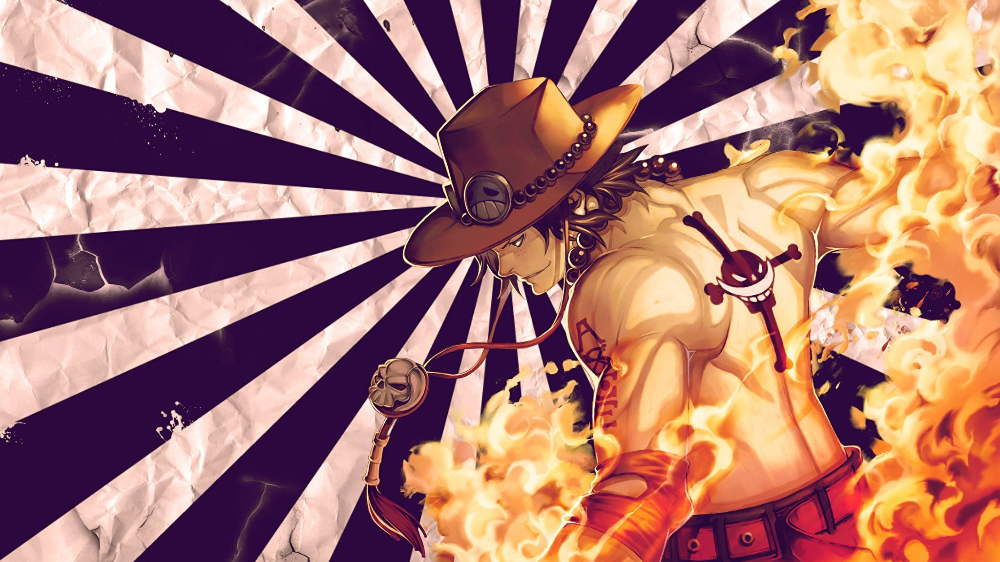
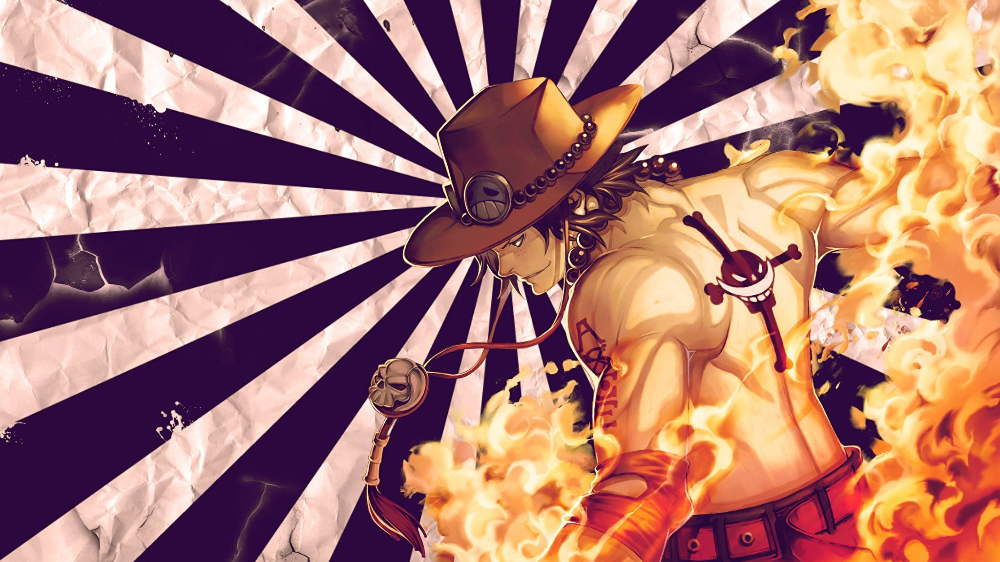
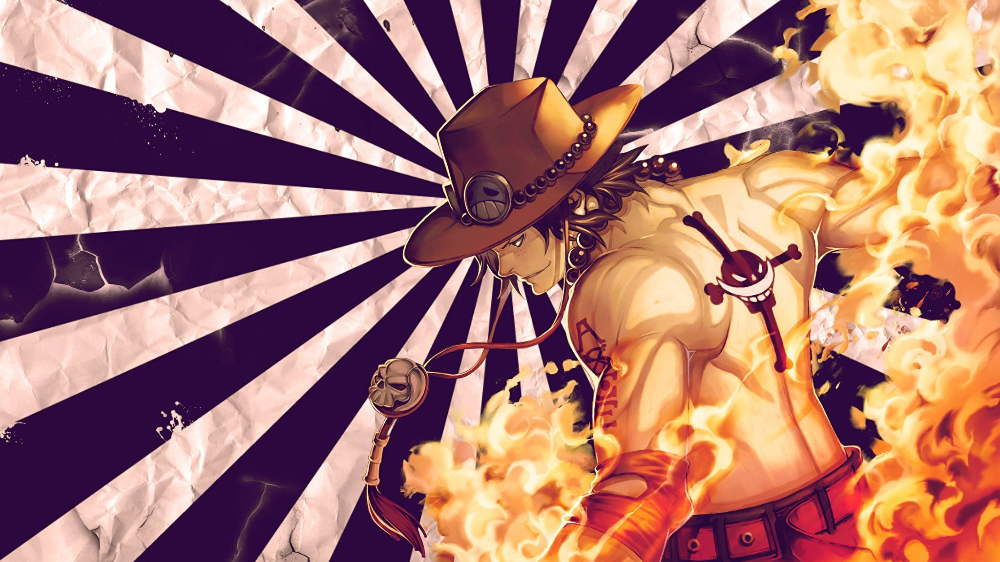

Арты

 

Гол Д. Роджер был известен как "Король пиратов", самое сильный и печально известный пират, плававший на Гранд Лайн. Поимка и казнь Роджера, Мировым правительством, привела к переменам во всем мире. В своих последних словах перед смертью он поведал о существовании величайшего сокровища в мире - One Piece. Именно благодаря этому открытию началась Великая Эпоха Пиратов - людей, мечтавших найти Ван Пис, который сулил неограниченное богатство и славу, а также титул Короля Пиратов.
Годы спустя, появляется Монки Д. Луффи, 17-летний юноша, который не поддается стандартному определению пирата. Вместо популярного образа злого, жестокого, грабящего деревни ради забавы, Луффи в качестве пирата выступает только ради: мысли о захватывающем приключении, которое приведет его к интересным людям и, в конце концов, к обещанным сокровищам. Следуя по стопам своего героя детства, Луффи и его команда путешествуют по Гранд Лайн, переживая безумные приключения, раскрывая темные тайны и сражаясь с сильными врагами, и все это для того, чтобы добраться до самого желанного богатства - One Piece.

Факты о ван пис: